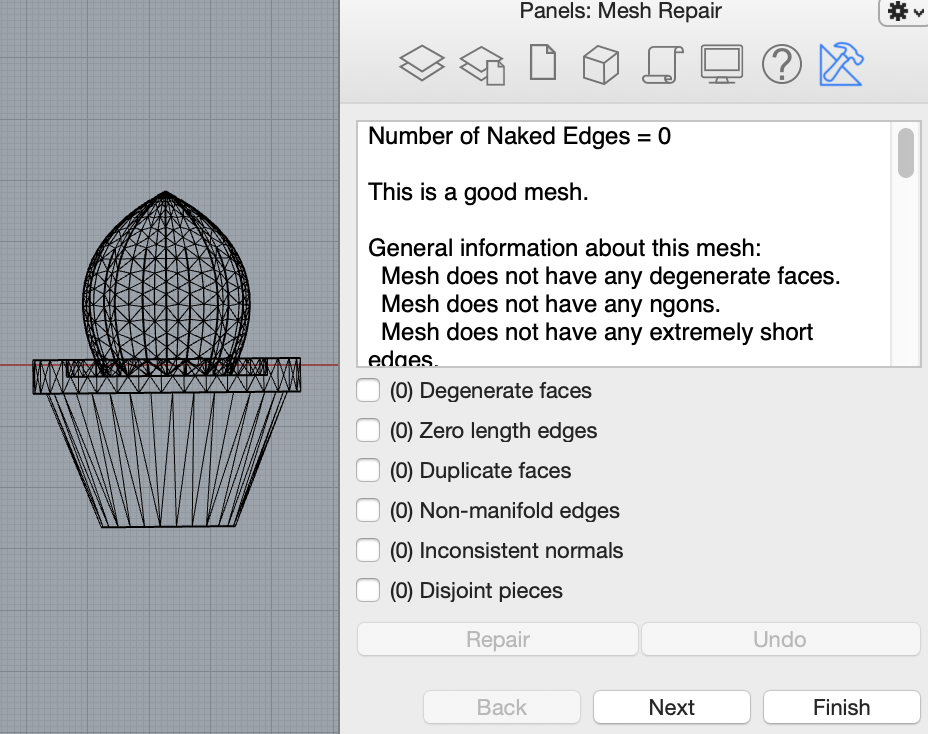
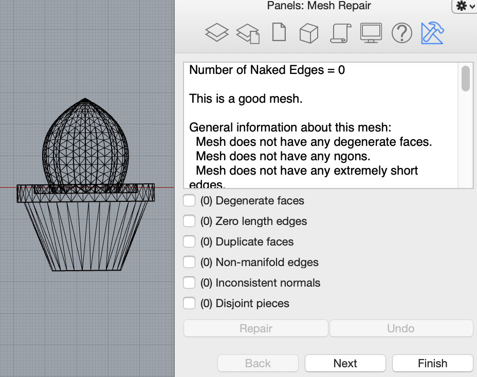
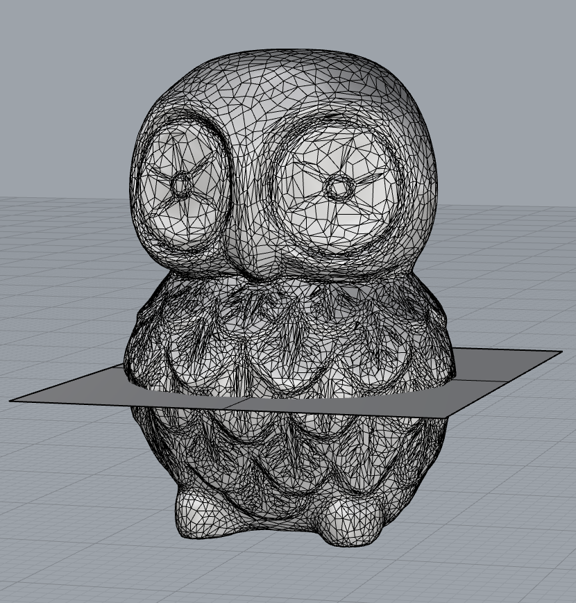
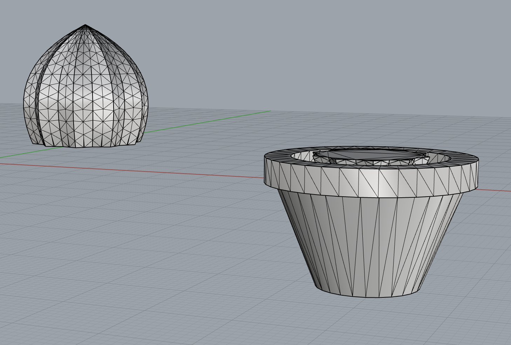
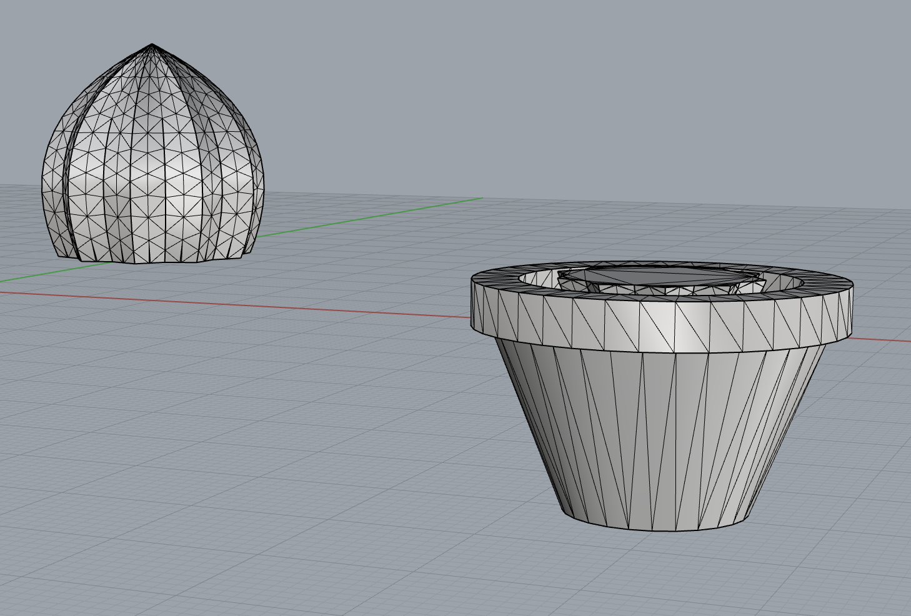
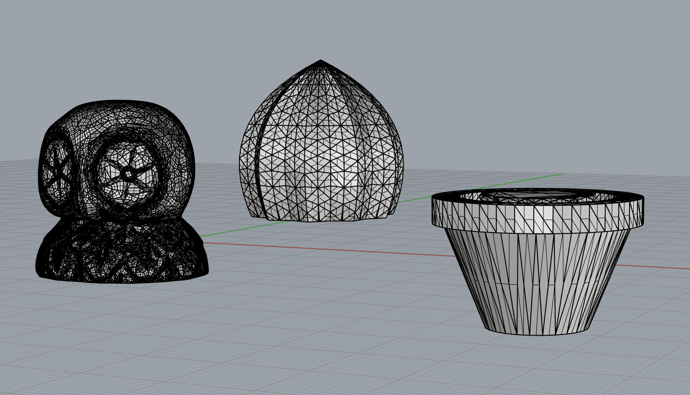
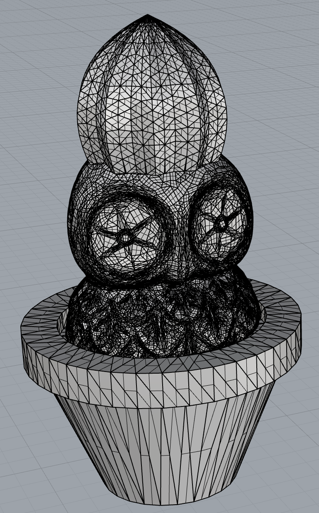

Combining Meshes
This week I learned how to combine meshes. The objects I chose were a owl which I downloaded from Thingiverse. I had this idea that I wanted the owl to be sandwiched in-between the cactus plant and it's pot, so it looked like it was stuck in the pot and wearing the cactus plant as a crown.


Finding the owl file was pretty easy, but I had a hard time finding a cactus file where the plant and cactus were one object, usually the files had two objects, one for the pot and one for the cactus plant. After I found a single object cactus file, I imported both the cactus and the owl into Rhino. The objects were veryyyyyy different sizes, so I re-sized both to an appropriate in-between size.

After that I examined the quantity of mesh faces to see if either object should be reduced. Looking at the owl, I guessed that I would need to reduce mesh faces. I was able to reduce from 300,000+ to 20,000. When I inspected the cactus I leared that the cactus only had 1,694 faces so I didn't reduce it. Next, I used the ShowEdges command because the owl looked a little unusal at first in the shaded view. Luckily, both of my objects had 0 naked edges and 0 non-manifold edges!

To be on the safe side, I also ran both objects through the MeshRepair command to validate that they were both good meshes. The MeshRepair command confirmed that both objects were good meshes. Additionally, both had zero items to repair!.


 

I then made a poly surface for the meshes. Because I wanted the owl to be sandwiched between the cactus object, once I added the poly surface to the cactus I copied the cactus and the surface, and then flipped the direction of the surface, so I would have one mesh object of the plant, and one object of the pot. I then used the MeshBooleanDifference command to get the size and shape of the objects to begin combining.


 

Using the MeshtoNURB command for all three objects I was able to successfully turn them into polysurfaces. I then aligned all three objects in the top view using concentric align. Once all three pieces were placed where I wanted, I used the BooleanUnion command. I examined the new object and it was closed. I exported it with a 0.001mm tolerance.
 
I then sliced the file in Cura using standard quality settings, and standard support with max resolution and max travel resolution increased to .5, and then I printed my new object.